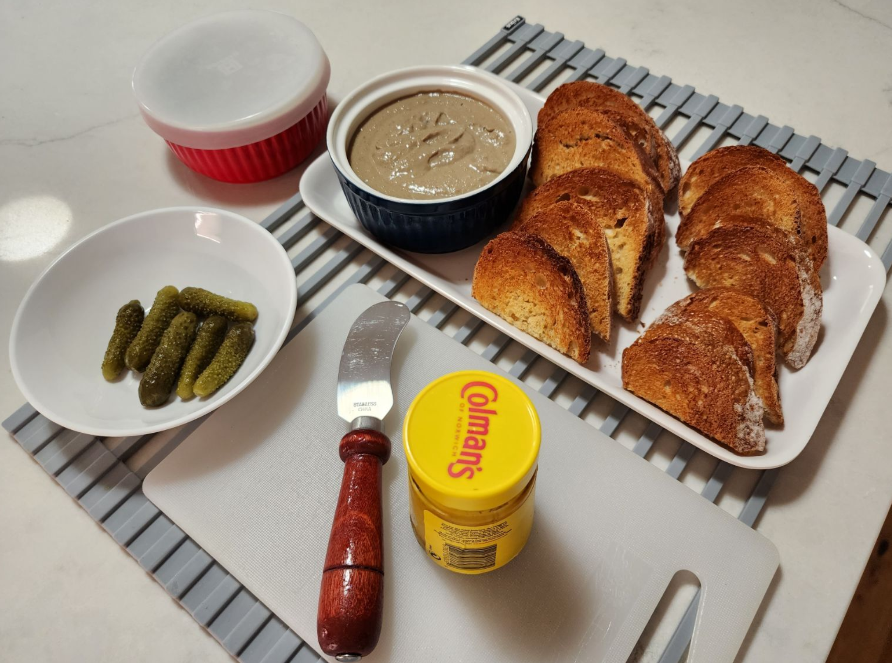

Chicken Liver Pâté

Ingredients
- 1 lb fresh chicken livers, trimmed
- 8 tbs butter, divided use
- 2 medium shallots, finely chopped
- 1 clove garlic, minced
- 2 tbs capers
- 1 tsp dried thyme or 1 tbs fresh thyme leaves, chopped
- 1 tsp anchovy paste (optional)
- ½ cup Madeira or port
- ¼ C cream
- Kosher salt and cracked pepper to taste
Directions
- Rinse livers well, remove sinews and fat, chop in small pieces and soak in milk for 30 minutes
- Put a large, heavy sauté pan over medium heat and melt 4 tbs of the butter until it
begins to foam.
- Add the shallots, and sauté them until translucent, being careful not to allow them to brown.
- Add the livers, thyme and Madeira or port, and bring the heat to high.
- Cook, stirring occasionally, until the wine has reduced, and the livers are lightly browned but still very soft and pink on the inside, approximately 2 minutes.
- Once the livers have browned, add the capers, garlic, and anchovy paste (if using), and sauté another minute.
- Remove from heat and allow to cool for 10-15 minutes.
- When cool, put the liver mixture into a blender or food processor, along with the cream and the remaining butter.
- Purée until smooth, adding a little more cream if necessary, adjust seasoning and press through a fine mesh sieve.
- Pack the pâté into a glass jar or bowl and smooth the top with a spatula.
- Cover with plastic wrap and refrigerate until firm, about two hours or up to five days.
- Serve with bacon-onion jam and toast, water crackers, or a crusty baguette
Michael Fritsche
mbf@fritsche.org